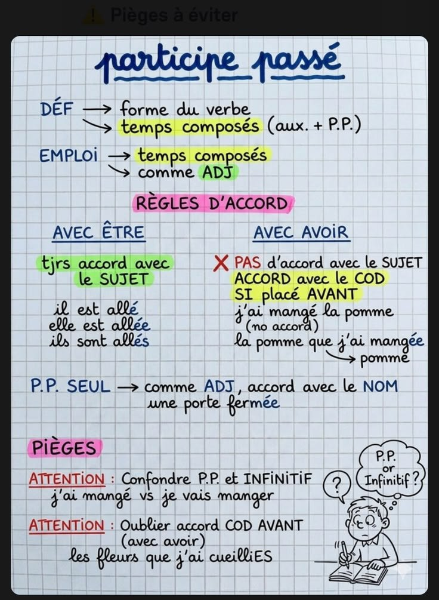
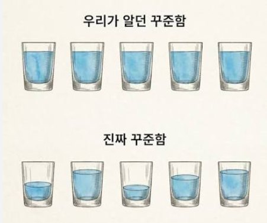
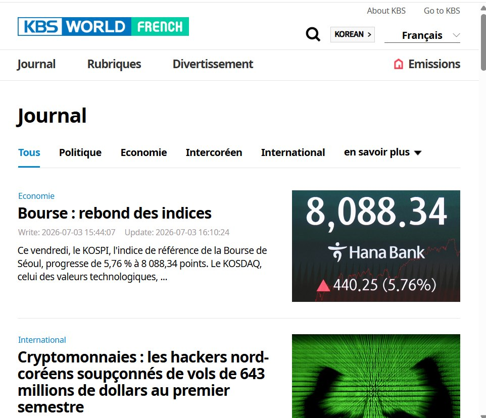
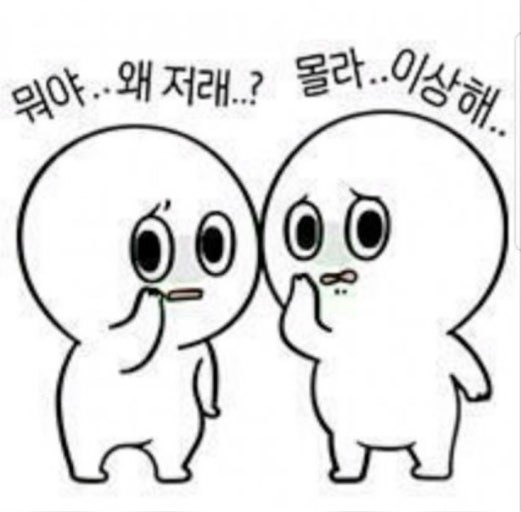

🧠 공부법
프랑스어 덕질하기,
오래가는 사람들의 프랑스어 공부법 8가지
프랑스어 교재도, 유튜브 채널도, 인강도 추천하지 않습니다.
누구나 프랑스어 덕질 가능합니다.
왜냐하면 정말 사소한 거거든요!

먼저 읽는 요약
프랑스어를 오래 하는 사람들은 교재를 더 많이 사지 않습니다. 좋아하는 것 쪽으로 프랑스어를 끌어오는 습관을 갖고 있어요. 이 글에서는 그 습관 여덟 가지를 정리합니다.
- 꺼내 보는 공부 (Retrieval Practice)
- 컨디션에 맞춰 양을 조절하기
- 좋아하는 콘텐츠로 반복량 쌓기 (Comprehensible Input)
- 아는 뉴스를 프랑스어로 먼저 보기
- 안 들려도 계속 보며 문화 코드 익히기
- 나에게 맞는 학습 경로 고르기
- 자료를 고르는 눈 기르기
- 내가 잘 기억하는 방식 활용하기
안녕하세요, 프랑스어를 거의 25년째 공부하며 4개 국어를 하는 프랑스어 전문가 김두우리입니다. 저 역시 오랫동안 언어를 공부하고 가르치면서, 오래 프랑스어를 공부하는 사람들의 습관에 공통점이 있다는 걸 느꼈어요. 이번 글의 키워드는 프랑스어 덕질입니다.
1. 눈으로만 공부하면 왜 안 남을까
교재를 읽습니다. 문제를 풉니다. 답을 맞혀봅니다. 그리고 끝. 생각보다 많은 분들이 여기에서 공부가 끝납니다.
그런데 교육학에서는 정보를 다시 꺼내는 과정(Retrieval Practice)이 기억을 훨씬 오래 유지한다고 이야기합니다. 그래서 한 번이라도 직접 정리하고, 말해보고, 요약해 보세요.

그 순간부터 읽은 내용이 아니라 내 지식이 되기 시작합니다.
2. 매일 같은 양을 하려다 지치는 이유
매일 같은 양의 에너지를 갖고 있는 사람은 없습니다. 오늘은 30퍼센트, 내일은 90퍼센트, 모레는 60퍼센트. 이게 정상이에요. 그런데 많은 사람들이 매일 100퍼센트를 요구하고, 그러다 결국 지칩니다.

언어교육에도 학습자의 스트레스가 높아질수록 습득 효율이 떨어진다는 Affective Filter(정서적 필터) 개념이 있습니다. 컨디션이 안 좋은 날은 억지로 2시간 앉아있는 것보다 20분 쉬는 게 더 도움이 될 수도 있어요.
반대로 오늘 머리가 정말 잘 돌아간다면 그날은 욕심내도 좋습니다! 자신만의 바이오리듬을 며칠만 관찰해 보세요. 학교가 끝난 뒤인지, 퇴근 후인지, 아침인지. 생각보다 본인만의 황금 시간이 있습니다.
3. 프랑스어 덕질하기
사실 오늘 글에서 가장 추천하는 방법입니다. 요즘 한국어를 정말 잘하는 외국인들을 보면 공통점이 하나 있어요. K드라마 덕후, 웹툰 덕후, 아이돌 덕후, 배우 덕후. 즉, 오타쿠입니다.
좋아하는 사람의 인터뷰를 보고, 댓글을 읽고, SNS를 보고, 자막을 보면서 같은 표현을 몇십 번, 몇백 번 반복합니다. 이게 왜 효과적일까요? 교육학에서는 이해 가능한 입력(Comprehensible Input)이 많을수록 습득이 빨라진다고 설명합니다. 이미 내용을 알고 있으니 언어 자체에 집중할 수 있게 되는 것이죠.
저 역시 브라질에서 포르투갈어를 배울 때 그 나라의 연예인 가십 뉴스를 엄청 봤는데요. 나라와 언어는 달라도 도파민이 높은 건 똑같더라고요.
4. 프랑스어 듣기, 아는 뉴스부터 보세요
실력을 늘리겠다며 처음부터 Le Monde를 펼치는 분들이 많습니다. 프랑스 사람들도 매일 르몽드를 읽지는 않아요. 오히려 저는 KBS World French처럼 한국 뉴스를 프랑스어로 소개하는 자료를 추천합니다.

이미 알고 있는 사건이기 때문에 내용을 이해하려고 애쓰기보다 "아, 이걸 프랑스어로 이렇게 표현하는구나." 를 관찰하게 됩니다. 테마별 어휘도 훨씬 오래 기억돼요. 저도 브라질 사람들에게 프랑스어를 가르치는 자료를 굉장히 많이 참고했습니다. 역으로 공부하면 생각보다 훨씬 재미있습니다.
5. 프랑스 영화가 안 들릴 때 얻는 것
영화, 드라마, 인터뷰, 예능. 처음에는 거의 안 들립니다. 당연한 것입니다. 여기서 얻을 수 있는 것은 문화적 코드 인사이트예요. 특정 상황에서 번역된 자막을 보면서 이런 질문이 생깁니다.
- 왜 저기서 웃지?
- 왜 저렇게 반응하지?
- 왜 저 표현을 쓸까?

이 프랑스어 덕질의 관찰들이 회화의 감각을 키워줍니다. 문법보다 문화가 먼저 이해되는 순간이 있습니다.
6. 프랑스어 배우는 방법, 어디가 맞을까
프랑스어를 배울 수 있는 방법은 정말 많습니다.
- 프랑스 대사관 어학원
- 알리앙스 프랑세즈
- 사설 학원
- 인강
- 1:1 과외
- 온라인 플랫폼
- 소규모 회화 스터디
중요한 건 정답은 없다는 것입니다. 저 역시 학생마다 추천하는 방법이 모두 달라요. 직접 경험해 보고 자신에게 맞는 조합을 찾는 것이 가장 좋습니다. 상황에 따라 하이브리드 방법도 충분히 가능합니다.
7. 프랑스어 공부 자료, 고르는 눈이 실력입니다
가장 많이 듣는 질문입니다. "뭐가 제일 좋아요?" 물론 레퍼런스를 참고하는 것은 좋습니다. 하지만 지금은 자료가 너무 많은 시대입니다. 오히려 좋은 자료를 찾는 능력이 공부 능력이 되었습니다.
정말 중요한 프랑스어 덕질은, 누군가의 추천보다 내가 꾸준히 볼 수 있는 자료를 찾는 것입니다.
8. 내가 잘 기억하는 방식 활용하기
본인이 학교를 다니면서 필기하고, 수업의 핵심 정보를 어떻게 기억했는지 한번 생각해 보세요.
- 형광펜으로 밑줄 긋기
- 요약해서 혼잣말로 정리하기
- 수업 때만 초집중해서 기억하기
언어 공부도 마찬가지예요.
청각, 시각, 기억력, 요약 능력 등 본인의 잠재력을 잘 끌어내는 방법으로 공부해 보세요!
다만 프랑스어는 철자와 발음의 차이가 큰 언어이기 때문에 읽기만 하지 말고 쓰기, 듣기, 말하기를 균형 있게 가져가야 하는 거, 잊으면 안 되겠죠?
오늘 소개한 프랑스어 덕질 방법은 사실 특별한 비법이 아니에요.
언어는 단거리 달리기가 아니라 마라톤입니다.
오늘 하루 억지로 두 시간을 앉아 있기보다, 좋아하는 배우 인터뷰 하나를 끝까지 보는 것이 더 큰 공부가 될 수도 있습니다.
교재를 많이 보는 것보다 프랑스어 덕질을 오래 할 수 있는 환경을 만들어보는 것도 적극적으로 추천드립니다!
김두우리, 16년차 프랑스어 FLE 전문 코치
한국 학생들이 어디서 막히는지 아는 사람이 씁니다. 1:1 맞춤 수업과 한불 통번역을 합니다.이력 보기
관련 칼럼